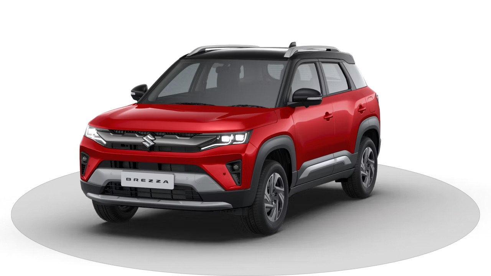

2026 Maruti Brezza Review: Price, Mileage & Verdict
By Gagan Mishra

Maruti claims 19.96–21.09 km/l for the 2026 Brezza’s petrol versions and 26.90 km/kg for the CNG. So far, independent figures exist only for the 1.0 turbo manual, and they are much lower than the claim: Autocar India’s long-term Brezza Turbo showed 12.1 km/l with 1,200 km on the odometer, and other publications’ drives in city traffic logged roughly 10–14 km/l. No publication has yet released a tested figure for the facelift’s 1.5 petrol manual, automatic or CNG. Below, claimed figures, independent tests and our own cost calculations are kept in separate tables.
These are Maruti’s certified figures from the Brezza brochure. They come from a standardised laboratory test (under Rule 115 of the Central Motor Vehicles Rules), commonly called the ARAI figure. The lab cycle is the same for every car, which makes these numbers useful for comparing models, but it does not reproduce Indian traffic.
| Engine and gearbox | Variants | Claimed mileage |
|---|---|---|
| 1.5 petrol, 6-speed manual | LXi, VXi | 21.09 km/l |
| 1.5 petrol, 6-speed manual | ZXi | 20.81 km/l |
| 1.5 petrol, 6-speed automatic | VXi, ZXi, ZXi+ | 20.17 km/l |
| 1.0 turbo-petrol, 6-speed manual | LXi, VXi | 20.47 km/l |
| 1.0 turbo-petrol, 6-speed manual | ZXi, ZXi+ | 19.96 km/l |
| 1.5 CNG, 6-speed manual | LXi, VXi, ZXi | 26.90 km/kg |
Three points stand out. The 1.5 manual has the highest petrol claim, and the automatic is about 1 km/l lower on paper. The turbo is offered only with a manual gearbox; the 1.5 six-speed torque-converter automatic is the only Brezza automatic. And the CNG is not sold as an automatic or in ZXi+ trim. CNG is measured in km per kg, not per litre, so compare it with petrol on cost per km (below), not on the raw number.
We have not run our own mileage test on the 2026 Brezza. These are the figures other publications have published, with the method each one used. All four are for the 1.0 turbo manual.
| Publication | Conditions and method | Result |
|---|---|---|
| Autocar India, long-term test | Brezza Turbo ZXi+, test data at 1,200 km on the odometer | 12.1 km/l |
| Autocar India, first drive | A day of hard driving and photography; on-board fuel computer | 11–14 km/l |
| CarDekho | Mumbai in the monsoon: stop-start city traffic plus highway stretches | 10–12 km/l city; 13–14 km/l cruising |
| V3Cars | About 50 km over 2 hours in city traffic; trip computer, not a tank-to-tank test | About 12.5 km/l |
On these numbers, expect the turbo to return around 12 km/l in mixed and city use, roughly 40% below its 20-plus km/l claim, with gentle highway cruising closer to 13–14 km/l. That gap is common for small turbo-petrol engines. Autocar India noted that the Brezza Turbo looked better than most rivals in its early running, where other turbo-petrols have dropped into single digits.
Trip-computer readings and short drives are less precise than a full tank-to-tank test, so treat these as a guide rather than an average. We will add independent results for the 1.5 manual, automatic and CNG when a credible test is published.
Owners post their figures on forums and user-review pages, but we can’t verify how those numbers were measured, so we don’t quote them as data. An earlier version of this article used owner reports, most of them from the pre-facelift Brezza. Those don’t transfer cleanly to the 2026 car: Autocar India notes that the 1.5 petrol and CNG manuals now have six gears instead of five, and the turbo engine is new to the Brezza.
If you are reading owner reports yourself, give more weight to tank-to-tank figures over several fill-ups than to a single trip-computer reading.
This is our own calculation, not a test result. It uses Delhi prices on 23 November 2026, as listed by V3Cars: petrol at ₹102.12 a litre and CNG at ₹86.98 a kg. Fuel prices vary by city, so redo it with your local price: cost per km = fuel price ÷ mileage.
| Version | Mileage used | Fuel cost per km | Per 1,000 km |
|---|---|---|---|
| CNG, claimed | 26.90 km/kg | ₹3.23 | ₹3,233 |
| 1.5 petrol manual, claimed (LXi, VXi) | 21.09 km/l | ₹4.84 | ₹4,842 |
| 1.0 turbo, claimed (LXi, VXi) | 20.47 km/l | ₹4.99 | ₹4,989 |
| 1.5 petrol automatic, claimed | 20.17 km/l | ₹5.06 | ₹5,063 |
| 1.0 turbo, tested (Autocar India long-term) | 12.1 km/l | ₹8.44 | ₹8,440 |
The claimed rows compare the versions on the same basis. They will not be your real cost, as the tested turbo row shows. Don’t set the CNG’s claimed figure against the turbo’s tested one: real-world CNG economy will also be below its claim, and no independent figure exists yet. For the extra price of the CNG and how long it takes to recover, see our Brezza petrol vs CNG break-even guide.
The facelifted Brezza went on sale in July 2026, so owner reports are still early and most cover under 2,000 km. On 23 November 2026 we read owner posts on Team-BHP, CarWale and CarDekho, leaving out test drives, posts about the older model, duplicate reviews and anyone who had not bought or driven the car. These are owners’ experiences, not measured results; we say how many owners each point rests on.
Owner figures back the pattern in this guide: expect well under the claimed figure in town and close to it on the highway.
What is the mileage of the 2026 Maruti Brezza?
Maruti’s claimed figures are 20.81 to 21.09 km/l for the 1.5 petrol manual, 20.17 km/l for the automatic, 19.96 to 20.47 km/l for the 1.0 turbo manual and 26.90 km/kg for the CNG.
What is the real-world mileage of the Brezza turbo?
Autocar India’s long-term Brezza Turbo showed 12.1 km/l at 1,200 km. Other publications’ drives logged about 10 to 12 km/l in city traffic and 13 to 14 km/l cruising on the highway.
Is there a real-world mileage test of the Brezza CNG or automatic?
Not yet. As of 23 November 2026 we have found no independent test of the 2026 Brezza’s 1.5 petrol manual, automatic or CNG. We will add one when a credible test is published.
Which Brezza has the best mileage?
On claimed figures, the CNG (26.90 km/kg) is the cheapest to run per km. Among petrol versions, the 1.5 manual in LXi and VXi trim has the highest claim, 21.09 km/l.
Is the Brezza automatic less fuel efficient than the manual?
On paper, slightly: the automatic is rated at 20.17 km/l against 20.81 to 21.09 km/l for the 1.5 manual. The automatic is available only with the 1.5 petrol engine.
For the full price, variant and feature picture, read our 2026 Maruti Brezza review. Choosing an engine? See Brezza turbo vs 1.5 petrol and the Brezza automatic review. Running a CNG? Our Brezza CNG review covers it, and the boot-space guide explains what the underbody tank changes.
Figures checked 23 November 2026. Claimed mileage is from Maruti Suzuki’s Brezza brochure. Test results are other publications’ and are attributed above; FlamingPiston has not run its own mileage test.
More in the Brezza series: Full Review · Variants Explained · Automatic Review · CNG Review · Turbo vs 1.5 Petrol · Maintenance Cost · Boot Space · Safety & NCAP · Pros & Cons · vs Tata Nexon · vs Fronx · vs XUV 3XO CNG
Owner discussions
Links checked 23 November 2026. Test figures are other publications’ and are attributed in the text. Owner reports were read on 23 November 2026; we do not show usernames.

By Gagan Mishra
By Gagan Mishra

By Gagan Mishra

By Gagan Mishra